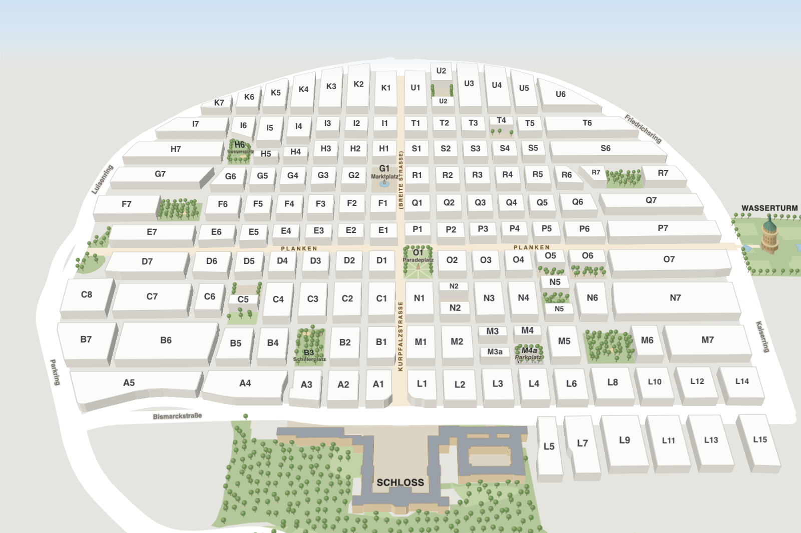

Was hat in den Quadraten geöffnet?
Die Mannheimer Innenstadt besteht aus 144 Quadraten, dazu kommen die Teilblöcke M3a und M4a. Wähle Tag, Uhrzeit und Kategorie: Die Karte zeigt, wo dann etwas geöffnet hat. Ein Klick auf ein Quadrat öffnet seinen Steckbrief.
Karte und Legende
Tipp: Wische über die Karte zur Seite oder wähle das Quadrat oben unter „Quadrat wählen“.

Gerade offen
Berechnet aus Öffnungszeiten, nicht aus Besucherzahlen. Tag, Uhrzeit und Kategorie stellst du oben bei der Karte ein.
Überrasch mich
Ein zufälliger Ort, der zur gewählten Zeit geöffnet hat.
Events heute
Was noch läuft oder beginnt (Beispiel-Einträge). Alle Termine: Events.
Schließt bald
Hat noch offen, schließt aber in der nächsten Stunde.
Öffnet gleich
Hat noch zu, öffnet aber in der nächsten Stunde.
Lange offen
Hat offen und bleibt bis 23 Uhr oder länger offen.